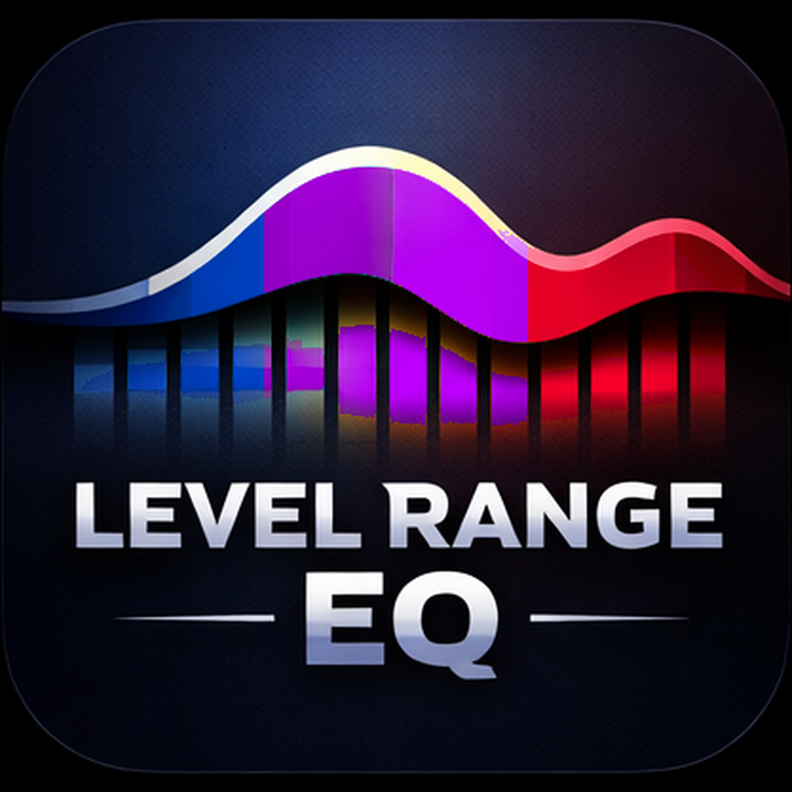
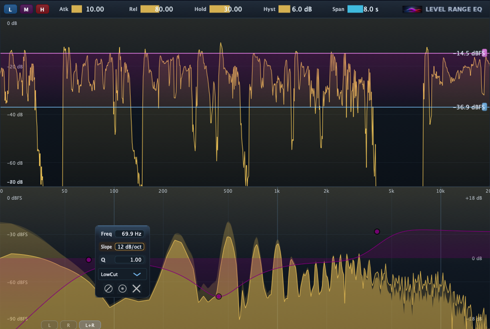

Version 1.6.0 — Out now.
Latest signed release: 1.6.0 • 2026-02-03
Level Range EQ is a macOS EQ plug-in (AAX / AU / VST3) that lets you apply different EQ curves to different level ranges of the signal — so quiet parts, mid-level parts, and loud parts can each be shaped differently.
Latest stable download is 1.6.0 (AAX / AU / VST3).

Previous: 1.5.0 improved UI workflow and readability.
Tip: Install the latest signed version (1.6.0).
Keep quiet phrases warm, keep normal phrases clear, and tame harsh peaks — without crushing everything into one curve.
Different tonal balance for low-level room tone vs spoken words vs loud consonants — useful for consistent intelligibility.
Shape sustain and transients differently (e.g., brighten attacks while keeping body smooth).
LevelRangeEQ_1.6.0.pkg (download above).
Note: This installer includes AAX / AU / VST3 builds for Apple Silicon.
Email: kjdevapphelp@gmail.com
Please include: macOS version, Pro Tools version, and a short description (or screenshot) of the issue.